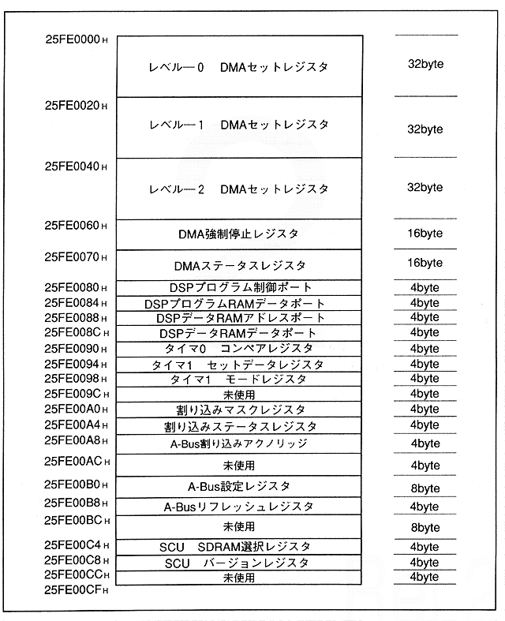

Figure 1.6 shows the SCU register map. The SCU register is assigned to the highest address in the SCU mapping area, and an area of 208 bytes is secured as shown in Figure 1.3. The map of each register area is shown below.
Figure 1.6 SCU register map
